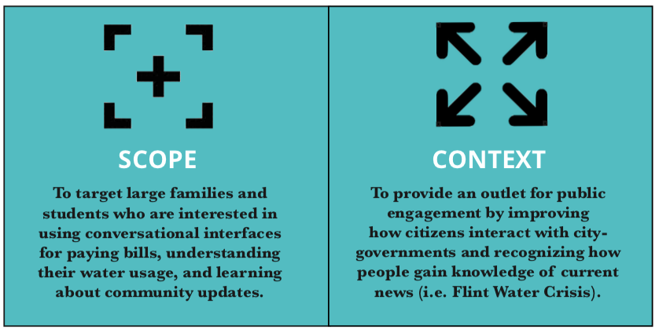
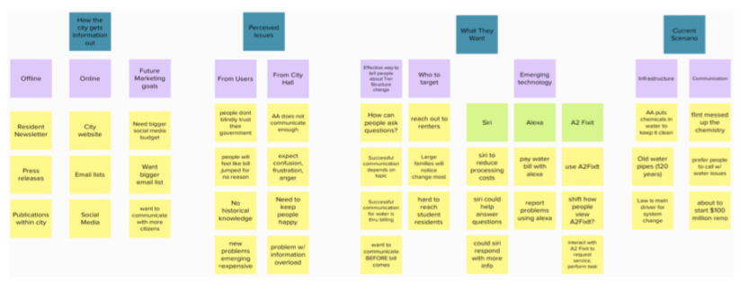
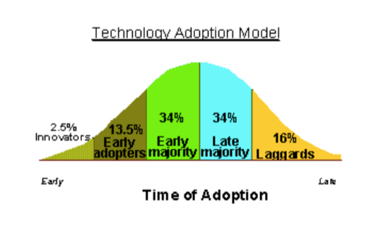

City of Ann Arbor Interactive Design
Back to ProjectsThe City of Ann Arbor was planning to roll out voice-automated water billing payments on mediums such as Apple’s Siri and Amazon’s Alexa. Working with our client, we ran a research project to see the potential adoption of this technology among citizens in the Ann Arbor area. Based on the gained sense of the user behavior, we could make recommendations to implement the voice-interactive technology for the most efficient rollout.
  Download Research Report